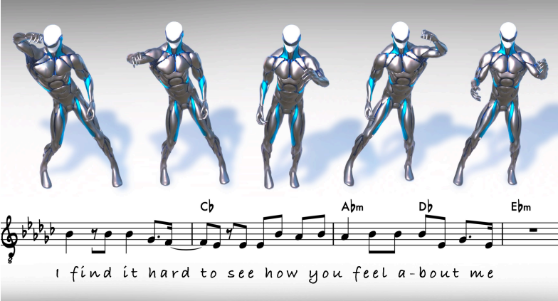
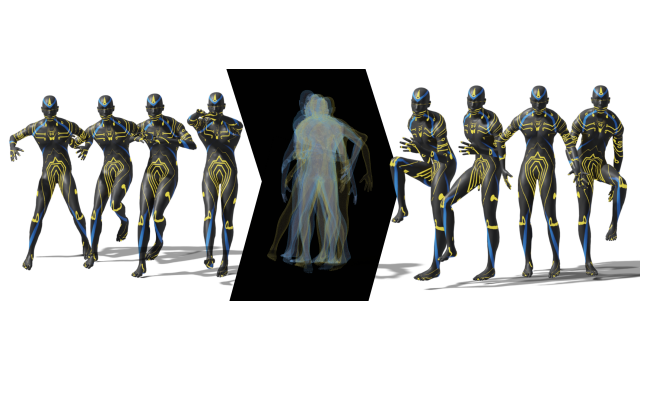
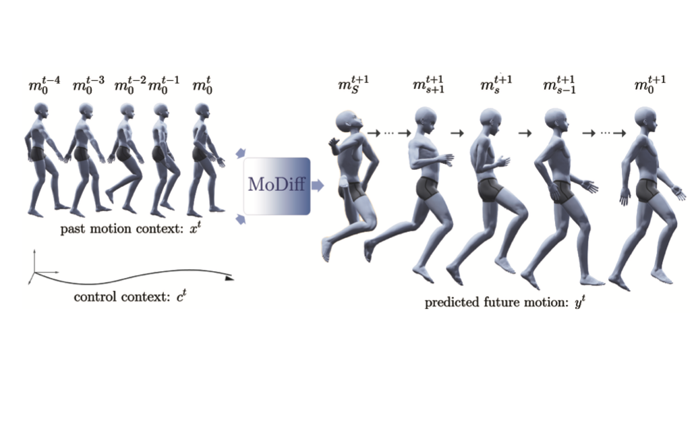
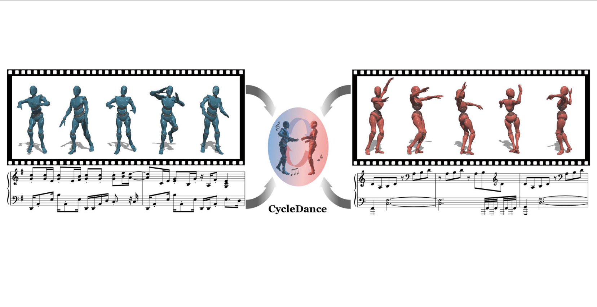

Wenjie Yin (印文杰)
Machine Learning | Human Motion Analysis | Human Robot Collaboration
I am currently exploring opportunities for a Research Scientist/Engineer position. Please don't hesitate to reach out!
![Email icon]()

![Google Scholar icon]()
![Github icon]()
About me
I am a postdoctoral fellow at the Division of Robotics, Perception and Learning at KTH Royal Institute of Technology, where I work on generative models and multimodal representation learning. My postdoctoral advisor is Danica Kragic. I obtained my Ph.D. degree in Computer Science at KTH Royal Institute of Technology, supervised by Mårten Björkman. During my PhD, I visited the National Institute of Informatics (NII) and had an internship at MSRA. Prior to that, I obtained my M.S. in Systems, Control and Robotics from KTH Royal Institute of Technology and a B.S. in Automation from Zhejiang University.
Research Interests
Selected Publications
|  |
LM2D: Lyrics- and Music-Driven Dance Synthesis Wenjie Yin*, Xuejiao Zhao*, Yi Yu, Hang Yin, Danica Kragic, Marten Bjorkman (under review) [PDF] [BibTex] [VIDEO] |
|  |
Scalable Motion Style Transfer with Constrained Diffusion Generation Wenjie Yin, Yi Yu, Hang Yin, Danica Kragic, Marten Bjorkman The 38th Annual AAAI Conference on Artificial Intelligence (AAAI2024) [PDF] [BibTex] [VIDEO] |
|  |
Controllable Motion Synthesis and Reconstruction with Autoregressive Diffusion Models Wenjie Yin, Ruibo Tu, Hang Yin, Danica Kragic, Hedvig Kjellström, Marten Bjorkman The 32th IEEE International Conference on Robot & Human Interactive Communication (RO-MAN) [PDF] [BibTex] [VIDEO] |
|  |
Multimodal Dance Style Transfer Wenjie Yin, Yi Yu, Hang Yin, Kim Baraka, Danica Kragic, Marten Bjorkman Journal of Machine Vision and Applications (MVAP), 2023. [PDF] [BibTex] [VIDEO] |
Other Topics
Services
Program Committee
Supervised students
Teaching
KTH Royal Institute of Technology